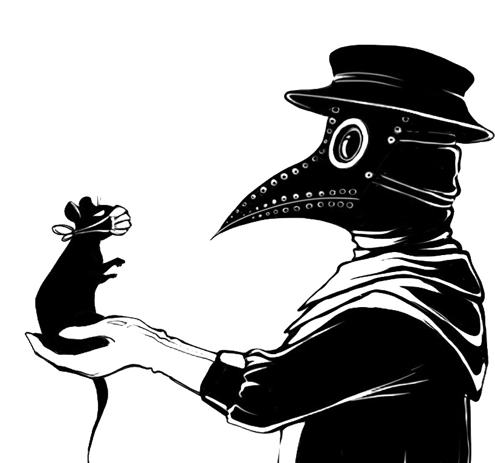

Surgimento
A peste bubônica mais conhecida como "Peste Negra" é uma doença causada pelo Yersinia Pestis, uma bactéria encontrada em ratos que estão com a pulga contaminada. Quando essas pulgas entram em contado com o ser humano, a transmissão da doença acontece. Assim, uma pessoa infectada pode facilmente transmitir por via respiratória a doença para outros. A Peste Negra atuava de maneira fulminante, e a pessoa que a contraía falecia em questão de dias.
Por que "Peste Negra"?
A peste era chamada de negra porque ela causava manchas negras na pele das pessoas, fruto das infecções provocadas pelo bacilo. Essa peste também ficou conhecida como bubônica por provocar bubões ou bubos, isto é, inchaços infecciosos no sistema linfático, sobretudo nas regiões das axilas, virilha e pescoço.
